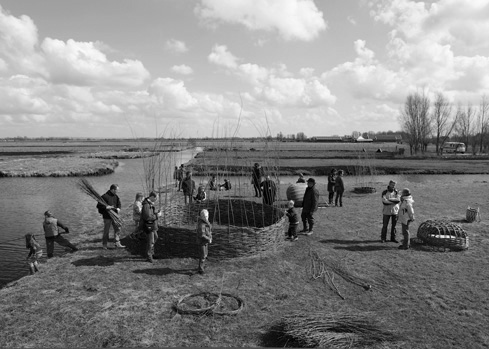

Mansholt, Landschap in Perspectief
18 januari – 6 april 2014, Bureau Europa, Maastricht
Bureau Europa wijdt de tentoonstelling Mansholt, Landschap in Perspectief aan de wijze waarop landbouw de inrichting en vormgeving van het Nederlandse landschap na 1945 heeft bepaald, tegen de achtergrond van de actuele hervorming van het Europees Gemeenschappelijk Landbouwbeleid. Leidraad van de tentoonstelling is het werk van voormalig landbouwminister Sicco Mansholt Protagonist Sicco Mansholt was boer en verzetsstrijder in de Wieringermeerpolder (1938-1945), minister van Landbouw en Voedselvoorziening in zes naoorlogse kabinetten (1945-1958), eerste Eurocommissaris voor Landbouw (1958-1973) en later Voorzitter Europese Commissie (1972-1973).
Aan de hand van een aantal fases wordt de ontwikkeling van de Nederlandse landbouw getoond en de wijze waarop deze zich verhoudt tot het landschap. Onder andere: het herstel van geïnundeerd landschap na WO II; de Zuiderzeepolders als ideaal landbouwgebied; de modernisering van het platteland door middel van ruilverkavelingen en technologische innovatie; de toenemende invloed van recreatie en natuurbeheer, en ten slotte de hedendaagse opdeling in verbrede en industriële landbouw.
-
In 1938 betrekt Sicco Mansholt samen met zijn vrouw Henny de boerderij Fletum in de Wieringermeerpolder. Aanvankelijk verbouwt hij tarwe, haver, suikerbieten en kool en brengt dag en nacht door op de tractor. Daarnaast is hij actief in de politiek en groeit hij uit tot woordvoerder van de sociaaldemocraten in de polder. Tijdens de oorlog speelt Mansholt een belangrijke rol in het verzet. Op zijn boerderij worden 14 onderduikers ondergebracht en illegaal talloze voedselpakketten samengesteld. Ook zorgt hij voor dekladingen om gedropte wapens te kunnen vervoeren.
Waarschijnlijk om meer droppings te voorkomen, wordt de Wieringermeer in 1945 onder water gezet door de bezetter. Na de drooglegging vertrekt Mansholt naar Den Haag om zich voor de landelijke politiek in te zetten en wordt boerderij Fletum beheerd door een zetbaas.
Beeld: Sem Presser/MAI (1950)
-
Het eiland Walcheren werd in de oorlog verwoest door bombardementen en de inundatie in oktober 1944. Als onderdeel van de herstelwerkzaamheden werken stedenbouwers, cultuurtechnici en landschapsdeskundigen samen aan een herinrichtingsplan. Hierin worden niet alleen versnipperde kavels samengevoegd en landbouwbedrijven vergroot, maar ook gebieden gereserveerd voor recreatie en behoud van het landschap.
Om het vergroten van de bedrijven mogelijk te maken, verhuizen 118 boeren naar de Noordoostpolder.
Beeld: Cas Oorthuys/Nederlands Fotomuseum
-
Ingrijpend én toonaangevend is de ruilverkaveling in het door armoede geteisterde Land van Maas en Waal. Hier veranderen de ‘lege’ drassige en ’s zomers droge komgronden tussen de rivieren in een nieuw, rationeel landschap. Op regelmatige afstand worden langs kaarsrechte wegen nieuwe boerderijen gebouwd ter vervanging van de oude, vaak vervallen gebouwen langs de dijken en in de dorpen.
De boeren krijgen deskundige begeleiding bij het opzetten van het nieuwe bedrijf en de moderne productiewijze om terugval naar oude patronen te voorkomen. Ook voor de boerinnen komt er een voorlichtingsprogramma, ‘de streekverbetering’. De integrale aanpak krijgt veel aandacht; Koningin Juliana bezoekt het gebied in 1956.
Beeld: Fotoarchief Dienst Landelijk Gebied (1957)
-
Waterland
Aan het eind van de jaren zestig staat de ruilverkaveling ter discussie. De bestaande wet- en regelgeving blijken niet in staat om de belangen van natuur- en landschapsbescherming, recreatie, cultuurhistorie en milieu voldoende te behartigen bij de transformatie van gebieden.
De landbouw verliest geleidelijk haar dominante positie op het platteland en legt het af tegen stedelijke belangen. Een voorbeeld is de ruilverkaveling Waterland waarbij het handhaven van landschappen en aanleggen van recreatievoorzieningen een grote rol speelt. Met de totstandkoming van de Landinrichtingswet in 1985 wordt het tijdperk van de ruilverkavelingen definitief afgesloten.
 Beeld: WUR Speciale Collecties
Beeld: WUR Speciale Collecties
-
De Bovenlanden is een karakteristiek veenweidegebied van 470 hectare ten zuiden van Wilnis, provincie Utrecht. Het gebied met voorheen een agrarische functie is aangewezen als natuurontwikkelingsgebied vanwege de belangrijke ecologische verbindingsfunctie tussen de Nieuwkoopse en Vinkeveense Plassen. De nadruk wordt hierbij gelegd op de kwaliteit van De Bovenlanden als ‘nieuwe natuur’.
Het project Hunnie ontwerpt nieuwe vormen van natuurrecreatie en beheer in De Bovenlanden. Vooruitlopend op het definitieve natuurinrichtingsplan van de Provincie, trokken de ontwerpers samen met huidige en toekomstige gebruikers het gebied in.
 Beeld: Hunnie
-
Klavertje 4 is een gebied ter grootte van ongeveer 5.000 hectare ten noordwesten van Venlo, gelegen tussen de snelwegen A73 en A67. Het masterplan, naar ontwerp van Studio Marco Vermeulen en partners, is een Agro Business Park en combineert een groot aantal logistieke functies (distributie, handel, opslag) met faciliteiten voor productie en verwerking van o.a. voedsel.
Door het slim combineren van functies en bedrijfsactiviteiten kunnen restproducten worden benut als grondstof of energiebron.
 Beeld: Studio Marco Vermeulen
Beeld: Studio Marco Vermeulen